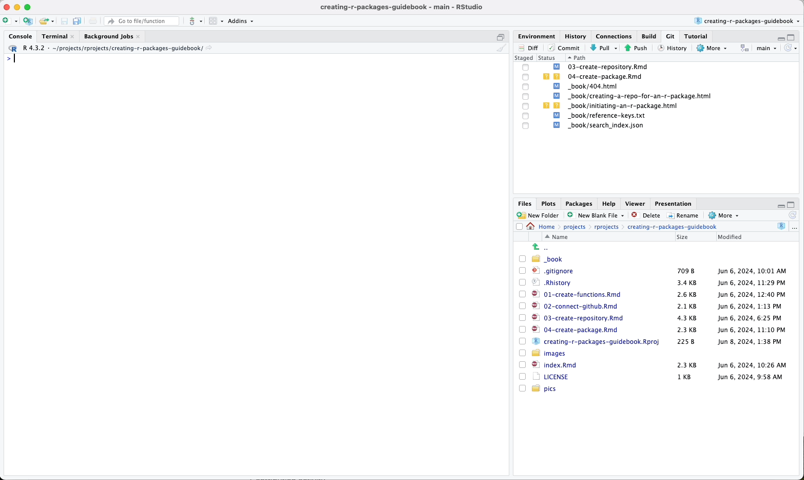
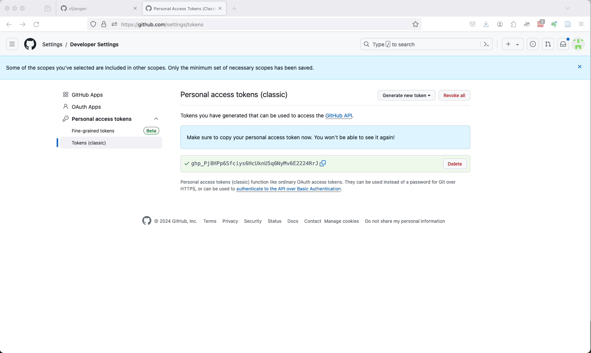

4 Setting Up Git and GitHub
For distributing your package to your friends or colleagues and for backup purposes, it is always advisable to push your package to a code repository. In this tutorial, we will use the GitHub service and set up a secure connection between it and your computer using a Personal Access Token (PAT). If you already have this set up, you can jump right to the next chapter. Otherwise, read on.
4.1 Installing Git
If you are on Mac, you don’t have to install anything. If you are on Windows, go to the following webpage and download Git and install it (preferably with default settings):
4.2 Tell Git your credentials
If you have already set up your name and email in Git, you can skip below to signing up for GitHub.
4.2.1 On Mac
- Press
Command(orCmd) button andspacebarbutton simultaneously - A Spotlight Search pops up
- Write:
terminal- You don’t usually have to write more than a couple of letters, and already then your computer suggests the application Terminal, and you can just press enter to make it launch
Terminal launches. Run the following lines of codes on it (replace your credentials to the lines below):
git config --global user.name "Your Name"git config --global user.email "youremail@example.com"You may now close the Terminal.
4.2.2 On Windows
- Press the
Windows Key+Ron your keyboard - Type
CMDand press enter - Type
git-bash.exe
If this does not work, do the following:
- Press the
Windows Key+Ron your keyboard - Type
Git Bashand press enter
A Unix-kind of shell should launch. Run the following lines of codes on it (replace your credentials to the lines below):
git config --global user.name "Your Name"git config --global user.email "youremail@example.com"You may now close the Git Bash.
4.3 Signing Up for GitHub
If you don’t have a GitHub account yet, you’ll need to sign up for one. Follow these steps:
- Go to GitHub and click on “Sign up” in the top right corner.
- Follow the on-screen instructions to create your account. Note that GitHub now uses Two-Factor Authentication (2FA) for added security, so you will need to set this up during the registration process.

After signing up or signing in to GitHub, do not sign out!
Because in the next step, the user needs to be signed in to GitHub as we will create a Personal Access Token (PAT) from within RStudio.
4.4 Setting Up a Personal Access Token (PAT)
We will now set up a Personal Access Token (PAT) which will be used to authenticate your actions on GitHub.
As mentioned earlier, if you already have a connection established with a PAT between your computer and GitHub, you can skip over this section and proceed to the next chapter.
4.4.1 Creating a PAT in R
Open your R console and run the following command to create a GitHub token:
This command will take you back to GitHub in your web browser, where you signed up or logged in moments ago, and open a web page where you can generate a new PAT.

Follow these steps:
Give your PAT any name you want and set an expiration date.
Select the scopes you want to grant (for typical package development, the default scopes are usually sufficient).
Click “Generate token”.

Copy the generated token to your clipboard and save it to a secure place, such as a password manager. You will not be able to see this token again once you leave the page.

(Don’t worry about my showing my PAT in the above animated GIF. By the time you see this video that PAT is already deleted.)
4.4.2 Storing the PAT Using gitcreds()
Back in your R console, run the following command to store your PAT securely:
You will be prompted to paste your PAT. Paste it and press Enter.
After completing these steps, you will have set up a secure connection with GitHub using a Personal Access Token (PAT).
Creating
R Packages: A Step-by-Step Guide by
Ville
Langén is licensed under
CC
BY-SA
4.0